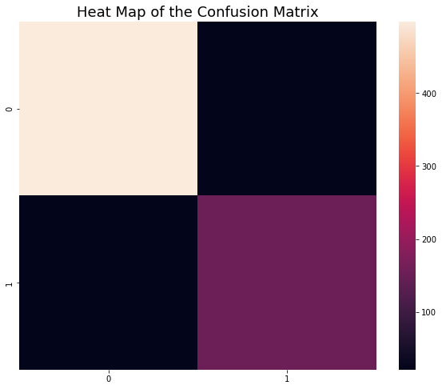
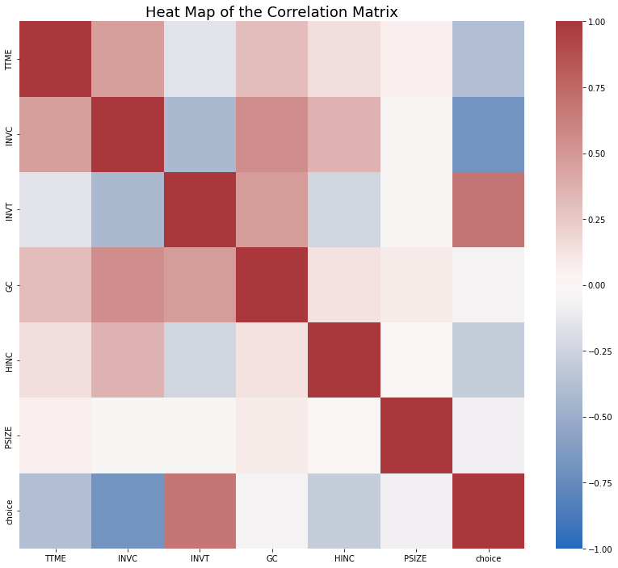

Naive Bayesian algorithm is a classification algorithm designed based on conditional probability. Its underlying logic is Bayesian posterior probability, so it becomes a Bayesian classifier. The mathematical form of the problem can be written as:
\[
P(B|A) = \frac{P(A \cap B)}{P(A)}
\]
The parameters in the formula will be defined as below.
We define Y as the classification of sample points. Here, we assume that the value of Y is discrete, and X represents the characteristics of the sample. In general, we can often know the proportion of certain characteristics in a certain category. So our ultimate goal is to get the final value of , which means the probability that the sample point is of classification Y given the character X. By analyzing the distribution of the population, we can directly use the proportion of different values of X in the population to approximate the overall and use the proportion of different X in a given category Y to represent the . The purpose of the algorithm is to calculate the conditional probabilities of a given X in different kinds by iteration, and take the maximum conditional probability as the classification of the sample point.
To be noticed, the algorithm requires the data set to be as large as possible to ensure the training data can represent the population in general case.
Read the “free_mtr_text_data.csv” file from the data cleaning part.
You can access to this data here:
https://github.com/anly501/anly-501-project-WilliamChuFCB/tree/main/data/cleaned_data
After read in the csv file, I also transform the string labels to integer labels for further modeling.
Code
df=pd.read_csv('free_mtr_text_data.csv') print("shape of the dataset:")print(df.shape)#CONVERT FROM STRING LABELS TO INTEGERS labels=[]y1=[]for label in df["label"]:if label notin labels: labels.append(label)print("index =",len(labels)-1,": label =",label)for i inrange(0,len(labels)):if(label==labels[i]): y1.append(i)y1=np.array(y1)# CONVERT DF TO LIST OF STRINGS textdata=df["text"].to_list()print("number of text chunks = ",len(textdata))print("-------------------")print("examples of the data:")print(textdata[0:3])
shape of the dataset:
(3465, 2)
index = 0 : label = freeway
index = 1 : label = metro
number of text chunks = 3465
-------------------
examples of the data:
['boenau rfsdfhsfbhwsfgb least ca expressway might limited access still grade inte http co dibmsr9b5b', 'zacakamadu sudden urge go san jose talk cultural impact song unfortunately san jo http co nujnntbhx0', 'alinaaaziz yes girl freeway system wack lol']
Then, vectorize the data and transform it into onehot matrix.
Code
# INITIALIZE COUNT VECTORIZERvectorizer=CountVectorizer(min_df=5) # RUN COUNT VECTORIZER ON OUR COURPUS vec=vectorizer.fit_transform(textdata) dense=np.array(vec.todense())#CONVERT TO ONE-HOT VECTORSmaxs=np.max(dense,axis=0)onehot=np.ceil(dense/maxs)# DOUBLE CHECK print("shape of onehot matrix:")print(onehot.shape)
shape of onehot matrix:
(3465, 1332)
Basic EDA for the text data
Create a heat map to visualize the distance matrix:
Code
num_rows_keep=250index=np.sort(np.random.choice(onehot.shape[0], num_rows_keep, replace=False))tmp1=onehot[index, :]#COMPUTE DISTANCE MATRIXdij=[]#LOOP OVER ROWSfor i inrange(0,tmp1.shape[0]): tmp2=[]#LOOP OVER ROWSfor j inrange(0,tmp1.shape[0]):#EXTRACT VECTORS vi=tmp1[i,:] vj=tmp1[j,:]#COMPUTE DISTANCES dist=np.dot(vi, vj)/(np.linalg.norm(vi)*np.linalg.norm(vj)) # BUILD DISTANCE MATRIXif(i==j or np.max(vi) ==0or np.max(vj)==0): tmp2.append(0)else: tmp2.append(dist) dij.append(tmp2)dij=np.array(dij)import seaborn as snsfig,axes = plt.subplots(1, 1, num="stars",figsize=(10, 8))plot1=sns.heatmap(dij, annot=False)plot1.set_title("Heat Map of the Distance Matrix", fontsize=18)print(dij.shape)print(dij)
This is a heatmap of distance matrix of sentence vectors for a subset of the data.
Next, perform PCA on this data and visualize the distribution of the data on first two and three principle components respectively using 2-D and 3-D scatter plot. Also, draw a pairplot for first ten principle components.
Code
from sklearn.decomposition import PCA# COMPUTE PCA WITH 10 COMPONENTSpca = PCA(n_components=10)pca.fit(onehot)print(pca.explained_variance_ratio_)print(pca.singular_values_)# GET PRINCIPLE COMPONENT PROJECTIONS principal_components = pca.fit_transform(onehot)df2 = pd.DataFrame(data = principal_components) df3=pd.concat([df2,df['label']], axis=1)# FIRST TWO COMPONENTSsns.scatterplot(data=df2, x=0, y=1,hue=df["label"]) plt.show()#3D PLOTax = plt.axes(projection='3d')ax.scatter3D(df2[0], df2[1], df2[2], c=y1);plt.show()#PAIRPLOTplot2=sns.pairplot(data=df3,hue="label") #plt.show()
According to the visualizations above, we can see that there exists obvious difference in data distribution of two labels of data. I will further use Naive Bayes to figure out if I can create a classification model with high accuracy based on this data.
Naive Bayes for text data
In order to establish the Naive Bayes model, we need to split the data into training and testing sets.
Code
#split to train data and test dataX=onehottest_ratio=0.2x_train, x_test, y_train, y_test = train_test_split(X, y1, test_size=test_ratio, random_state=0)y_train=y_train.flatten()y_test=y_test.flatten()print("x_train.shape :",x_train.shape)print("y_train.shape :",y_train.shape)print("X_test.shape :",x_test.shape)print("y_test.shape :",y_test.shape)
Train the model with Naive Bayes algorithm and predict on the testing set.
Code
# INITIALIZE MODEL model = MultinomialNB()# TRAIN MODEL model.fit(x_train,y_train)yp_train = model.predict(x_train)yp_test = model.predict(x_test)
Print the results of model prediction.
Code
def report(y,ypred):#ACCURACY COMPUTE print("Accuracy:",accuracy_score(y, ypred)*100)print("Number of mislabeled points out of a total %d points = %d"% (y.shape[0], (y != ypred).sum()))def print_model_summary():# LABEL PREDICTIONS FOR TRAINING AND TEST SET print("ACCURACY CALCULATION\n")print("TRAINING SET:") report(y_train,yp_train)print("\nTEST SET (UNTRAINED DATA):") report(y_test,yp_test)print("\nCHECK FIRST 20 PREDICTIONS")print("TRAINING SET:")print(y_train[0:20])print(yp_train[0:20])print("ERRORS:",yp_train[0:20]-y_train[0:20])print("\nTEST SET (UNTRAINED DATA):")print(y_test[0:20])print(yp_test[0:20])print("ERRORS:",yp_test[0:20]-y_test[0:20])print_model_summary()
ACCURACY CALCULATION
TRAINING SET:
Accuracy: 96.64502164502164
Number of mislabeled points out of a total 2772 points = 93
TEST SET (UNTRAINED DATA):
Accuracy: 93.93939393939394
Number of mislabeled points out of a total 693 points = 42
CHECK FIRST 20 PREDICTIONS
TRAINING SET:
[1 1 0 0 0 0 1 0 0 0 1 0 1 0 0 0 0 1 0 0]
[0 1 0 0 0 0 1 0 0 0 1 0 1 0 0 0 0 1 0 0]
ERRORS: [-1 0 0 0 0 0 0 0 0 0 0 0 0 0 0 0 0 0 0 0]
TEST SET (UNTRAINED DATA):
[1 1 0 0 0 0 0 1 1 1 0 0 0 0 0 0 0 0 1 1]
[1 1 0 0 0 0 0 1 1 1 0 0 0 0 0 0 0 0 1 1]
ERRORS: [0 0 0 0 0 0 0 0 0 0 0 0 0 0 0 0 0 0 0 0]
We can see that the prediction accuracy on the test dataset is 93.9%, which is very high. This means the model perform quite well on this dataset.
I further measure the prediction result using confusion matrix.
confu=confusion_matrix(y_test, yp_test.round())fig,axes = plt.subplots(1, 1, num="stars",figsize=(10, 8))plot3=sns.heatmap(confu)plot3.set_title("Heat Map of the Confusion Matrix", fontsize=18)plt.savefig("confusion matrix py.png")

This is a heat map of confusion matrix. The grids on top right-hand corner and left lower corner is black, which indicates that this model make few mistakes on the testing dataset.
Basic EDA for record data
In this part, I will use record data to train the Naive Bayes model. First read the csv file “travel_mode_choice.csv”
You can find this cleaned data here:
https://github.com/anly501/anly-501-project-WilliamChuFCB/tree/main/data/cleaned_data
Text(0.5, 1.0, 'Heat Map of the Correlation Matrix')

Naive Bayes for record data
Split the data into training and testing sets at 0.2 test ratio:
Code
#split to train data and test datay=df2.loc[:,"choice"]test_ratio=0.2x_train, x_test, y_train, y_test = train_test_split(X, y, test_size=test_ratio, random_state=0)# y_train=y_train.flatten()# y_test=y_test.flatten()print("x_train.shape :",x_train.shape)print("y_train.shape :",y_train.shape)print("X_test.shape :",x_test.shape)print("y_test.shape :",y_test.shape)
Train the Naive Bayes model and predict on the testing data:
Code
# INITIALIZE MODEL model = MultinomialNB()# TRAIN MODEL model.fit(x_train,y_train)yp_train = model.predict(x_train)yp_test = model.predict(x_test)
Result of the model prediction:
Code
def report(y,ypred):#ACCURACY COMPUTE print("Accuracy:",accuracy_score(y, ypred)*100)print("Number of mislabeled points out of a total %d points = %d"% (y.shape[0], (y != ypred).sum()))def print_model_summary():# LABEL PREDICTIONS FOR TRAINING AND TEST SET print("ACCURACY CALCULATION\n")print("TRAINING SET:") report(y_train,yp_train)print("\nTEST SET (UNTRAINED DATA):") report(y_test,yp_test)print_model_summary()
ACCURACY CALCULATION
TRAINING SET:
Accuracy: 79.16666666666666
Number of mislabeled points out of a total 120 points = 25
TEST SET (UNTRAINED DATA):
Accuracy: 74.19354838709677
Number of mislabeled points out of a total 31 points = 8
We can see that the accuracy on the test data is 74.2%. Since this data contains three different categories in the target variable, this accuracy is acceptable.
Utilize confusion matrix to further measure the performance of this model: